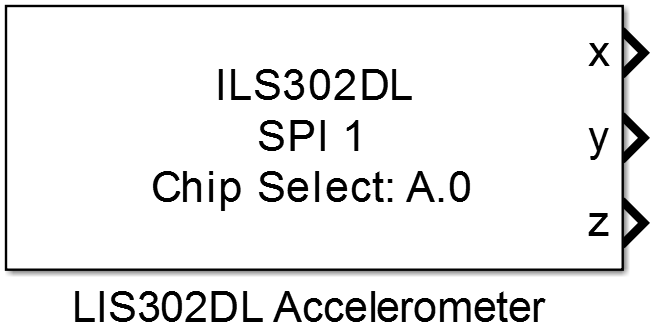
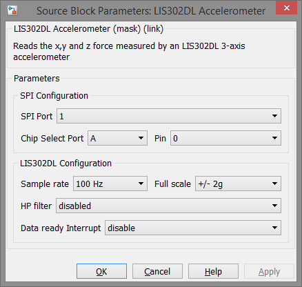

9.6. LIS302DL Accelerometer
Reads the x, y and z force measured by an LIS302DL 3-axis accelerometer in mg
9.6.1. Library
/SPI
9.6.2. Description
{kind=link}
This block provides acceleration measurement by an LIS302DL 3-axis accelerometer. Depending on the application two different measurement ranges can be configured, +/- 2g and +/- 8g. In addition a high pass filter inside the accelerometer can be activated an configured with different cut-off frequencies depending on the selected sample rate. The following table shows the cut-off frequencies to be selected. The measured force is provided in mg.
| filter level | cut-off frequency [Hz] | |
|---|---|---|
| @rate 100Hz | @rate 400Hz | |
| level 1 | 2 | 8 |
| level 2 | 1 | 4 |
| level 3 | 0.5 | 2 |
| level 4 | 0.25 | 1 |
9.6.3. Data Type Support
The block’s output data type is single.
9.6.4. Parameters and Dialog Box
9.6.4.1. SPI Port
Selects the SPI peripheral wich is configured by an SPI Master Config block.
9.6.4.2. Chip Select Port and Pin
Configuration of the MCU Pin the device’s chip select input is connected to.
9.6.4.3. Sample rate
Selects the sample rate of the internal ADC.
- 100 Hz → new value every .01 seconds
- 400 Hz → new value every .0025 seconds
9.6.4.4. Full scale
Selects the measurement range
- +/- 2g
- +/- 8g
9.6.4.5. HP filter
Enables the internal high pass filter and selects the cut-off frequency (referred to the table above)
9.6.4.6. Data ready Interrupt
Enables the data ready interrupt of the LIS302DL device. The interrupt can be at INT1 or INT2 pin of the chip and configured to be open drain or push-pull output driver.
Note
To use the data ready interrupt in the model a Digital Input or Interrupt block of the GPIO library must be configured to get the value of the INTx pin at the connected MCU pin.